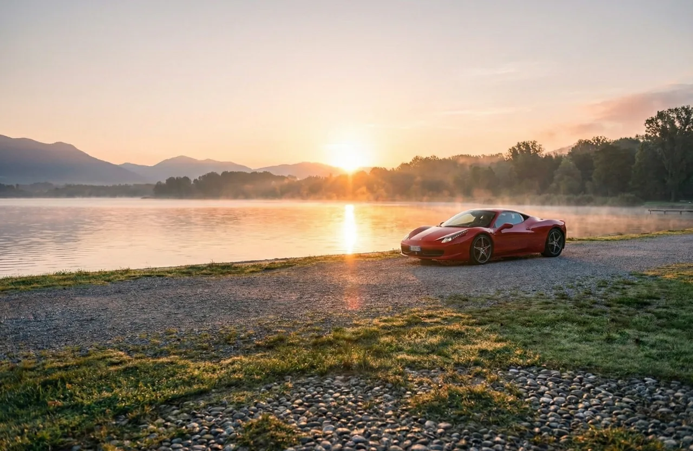
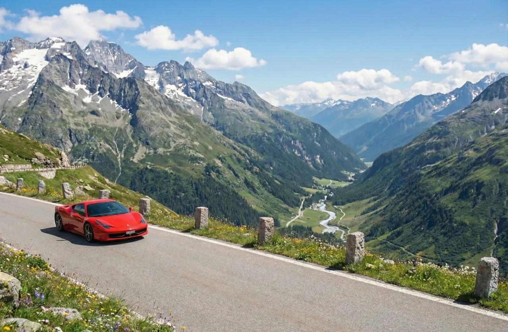
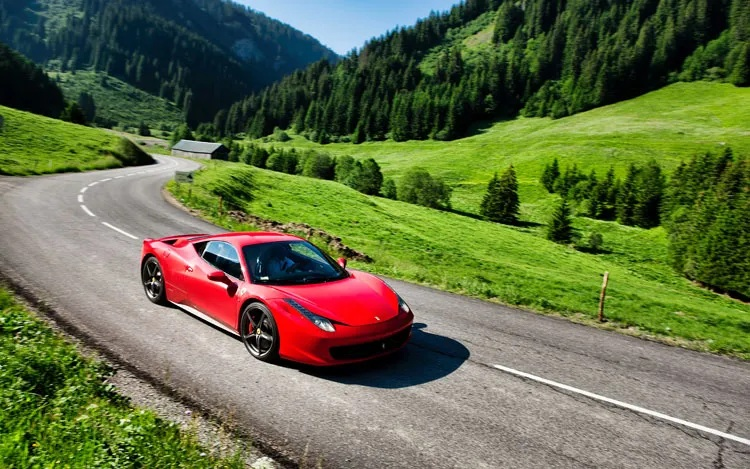

Some drives are about speed. Switzerland, at its best, is about precision. The scenery is composed, the road surface is tidy, and even the smallest village feels curated. In a Ferrari 458 Italia, that clarity becomes the whole point: steering feel, throttle response, and the sound that rises with the revs, all set against lakes, forests, and high ridgelines.
Start early, keep your pauses intentional, and choose one signature moment. A pass, a lakeside breakfast, or a quiet viewpoint. Luxury is calm and unhurried.
If you want rhythm, go lakes. If you want altitude, pick a pass day and plan your stops like chapters. If you want a destination, build the drive around a single lunch or sunset location.
Route selection at a glance
All routes begin and end near Zurich. Distances and times are designed for real world driving with pauses. You can always shorten by skipping a branch or two. For a wider overview of lake, mountain, and short-drive options, see our scenic drives from Zurich.
| Route | Character | Time | Best season | Ideal for |
|---|---|---|---|---|
| Lake Rhythm Zürichsee to Walensee |
Flowing bends, wide views, easy pace | 3 to 5 hours | All year | First time guests, relaxed luxury |
| Pre Alps Loop Toggenburg |
Varied roads, villages, gentle elevation | 4 to 6 hours | Spring to autumn | Balanced driving and scenery |
| Pass Day High altitude |
Switchbacks, grand viewpoints, alpine drama | 7 to 10 hours | Summer and early autumn | Full day signature experience |
| Evening Elegance Sunset and lights |
Short, cinematic, city to lakeside | 2 to 3 hours | All year | Dinner plans, photo moments |

Four routes that feel made for a Ferrari
Each route below is written in the same structure: what it feels like, where to pause, and how to keep it elegant. We can tailor any of them to your time window and comfort level.
Lake Rhythm
Think of this as Switzerland in one afternoon. Smooth sections, wide water views, and enough gentle curves to enjoy the car without forcing the tempo.
Stops that work well
- Breakfast or espresso by Zürichsee
- Walensee viewpoint for photos and quiet air
- A short lakeside walk to reset the senses
How to keep it perfect Leave Zurich before the city wakes. Aim for a single long pause by the water and a second brief stop for photos.
Pre Alps Loop
This loop mixes forests, open valleys, and small towns. It is the best choice when you want variety without committing to a full alpine pass day.
Stops that work well
- A viewpoint above Toggenburg
- A quiet village bakery for something warm
- A countryside lunch with parking close by
How to keep it perfect Keep the middle of the day flexible. If the road is busy, take an early lunch and return while the traffic is still soft.
Pass Day
This is the cinematic chapter. You plan it like a story: climb, crest, stop, descend, then a calm meal. The 458 feels alive in the switchbacks, yet composed on the faster links.
Stops that work well
- One top of pass viewpoint with a longer pause
- A second stop on the descent for photographs
- A destination lunch before the return leg
How to keep it perfect Choose one pass, not three. The best pass day is not the longest one. It is the one with room to breathe.
Evening Elegance
If you want a short experience that still feels special, go late afternoon and aim for golden light. You get the sound, the visuals, and a discreet arrival for dinner.
Stops that work well
- A lakeside viewpoint at sunset
- A short city photo moment after dark
- A restaurant with easy parking
How to keep it perfect Keep the route short. Let the car be the jewellery, not the schedule.

Seasonality notes
Switzerland is reliable, but altitude always changes the rules. Use this as a guide, then confirm conditions close to your date if you plan a high pass.
| Season | What it feels like | Best route style | Notes |
|---|---|---|---|
| Spring | Fresh air, clear mornings, occasional rain | Lakes and pre Alps | Altitude may still be limited. Plan with flexibility. |
| Summer | Long days, warm light, busiest roads | Pass day or early lake route | Start early. Choose one pass and keep pauses longer. |
| Autumn | Crisp air, golden forests, best photography | Pre Alps and select passes | Perfect for elegant pacing and scenery. |
| Winter | Sharp contrast, quiet roads, early sunsets | Lakes and evening elegance | Avoid high altitude routes. Focus on low elevation views. |

Practical details that keep it elegant
Fuel and comfort
Plan one fuel stop where it feels natural. It keeps the day relaxed and avoids a rushed decision. If you prefer, we can suggest stations that are easy to access and simple to park in.
Parking and photos
For photographs, the best approach is to choose one location that looks deliberate. A pull off with a wide view, a clean lakeside edge, or a quiet road shoulder with space. Ten calm minutes beat thirty rushed ones.
The most memorable drive is the one that fits Switzerland. Smooth inputs, measured sound in villages, and a calm presence. The car will still feel dramatic.
Tell us your available time, your comfort level, and whether you prefer scenery, driving rhythm, or a destination. We will respond with a route outline and the right rate.
Checklist for a perfect day
This table is designed to keep the experience calm. You can screenshot it and use it as a lightweight plan.
| Moment | What to do | Why it matters |
|---|---|---|
| Before departure | Pick one signature stop and one meal stop | Keeps the day composed and avoids over planning |
| First hour | Warm up gently, settle into the car | The best rhythm arrives naturally |
| Mid drive | Pause in a quiet place, drink water, take one photo | Small resets make the whole day feel premium |
| Return | Choose a calmer final leg, arrive unhurried | Luxury ends softly, not abruptly |